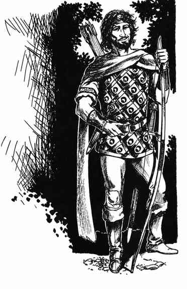

职业等级上限（角色种族表 II） · Class Level Limitations (Character Race Table II)
本表用法 How to Use This Table
非人类玩家角色的新职业等级上限，不仅取决于种族和职业，也取决于该职业所重视的属性值。因此，原表按种族分为若干子表。在相应子表中，以职业与属性值交叉查得角色可达到的最高职业等级。
每张子表左列的属性值，随职业而指向不同属性：战士、巡林客、刺客看力量；魔法师、幻术师看智力；牧师、德鲁伊看感知；盗贼看敏捷。巡林客、刺客和德鲁伊的等级上限有时还取决于其他属性；适用时详见子表脚注。
“U”表示相应种族与职业的等级进展不受本表限制：对盗贼和牧师而言，实际上没有上限；对德鲁伊和刺客而言，可升至该职业本身允许的最高等级。精灵与半精灵的子表未列骑士，半精灵的子表未列吟游诗人，因为只要满足这些职业的入职属性要求，等级进展就不受限制。
表中不少属性值高于新角色通常可有的上限，这是为祈愿术 Wish、魔法典籍或某些神器与遗物提升属性后的角色准备的。属性即使在极特殊情形下超过表中最高一档，也不会使等级上限超出本表所列。若属性低于子表首行，则使用该表最低的等级上限。例如，力量 14 或更低的矮人刺客，最高仍可升至 9 级。
重要： 只要角色是单一职业，而且该职业本来可以成为该角色多职业组合中的一个职业，以下子表所列或据表推得的等级上限便可再提高 2 级。例如，力量 18 的丘陵矮人战士／牧师，战士最高 8 级；同样力量的单职业丘陵矮人战士，则可升至 10 级。力量 14 的丘陵矮人牧师／战士，战士最高 6 级；若只任战士，则可升至 8 级。力量 18/90、智力 18、感知 18、体质 18 的半精灵牧师／巡林客，巡林客最高 9 级；相同属性的单职业半精灵巡林客则可升至 11 级。矮人不能同时成为刺客和多职业角色，因此矮人刺客仍受表中原定上限约束。
以下同一子表在原书横向分栏、跨页排印。为保持 CHM 表格可读，按原有职业栏组分别展示；空格表示原表该格留空，并非零级。
表 II.A：矮人 Table II.A: Dwarves
| 属性值 | 牧师（全部） | 战士：丘陵 | 战士：山地／灰矮人 | 盗贼（全部） | 刺客（全部） |
|---|---|---|---|---|---|
| 15 | 8 | 6 | 7 | U | 9 |
| 16 | 9 | 6 | 7 | U | 9 |
| 17 | 10 | 7 | 8 | U | 9 |
| 18 | 11 | 8 | 9 | U | 9 |
| 18/99 | 8 | 9 | 11¹ | ||
| 18/00 | 9 | 10 | 12² | ||
| 19 | 13 | 10 | 11 | U | 12² |
| 20 | 16 | 12 | 13 | U | 12² |
| 21 | 16 | 15 | 16 | U | 12² |
¹ 另须智力 18、敏捷 19。² 另须智力 19、敏捷 19。
表 II.B：侏儒 Table II.B: Gnomes
| 属性值 | 牧师（全部） | 战士（全部） | 幻术师（全部） | 盗贼（全部） | 刺客（全部） |
|---|---|---|---|---|---|
| 15 | 7 | 5 | 6 | U | 8 |
| 16 | 8 | 5 | 6 | U | 8 |
| 17 | 9 | 5 | 6 | U | 8 |
| 18 | 10 | 5 | 7 | U | 8 |
| 18/50 | 6 | 9¹ | |||
| 18/75 | 7 | 10² | |||
| 18/99 | 8 | 10² | |||
| 19 | 12 | 9 | 8 | U | 10² |
| 20 | 14 | 9 | 10 | U | 10² |
| 21 | 14 | 9 | 13 | U | 10² |
¹ 另须智力 18、敏捷 18。² 另须智力 19、敏捷 19。
表 II.C：精灵 Table II.C: Elves
牧师与德鲁伊 Cleric and Druid
| 属性值 | 牧师：黑暗精灵男性 | 牧师：黑暗精灵女性 | 牧师：其他精灵 | 德鲁伊：野精灵 | 德鲁伊：其他精灵 |
|---|---|---|---|---|---|
| 12 | 4 | U | 7 | 10 | U |
| 13 | 5 | U | 7 | 10 | U |
| 14 | 6 | U | 7 | 10 | U |
| 15 | 7 | U | 7 | 10 | U |
| 16 | 7 | U | 8 | 10 | U |
| 17 | 7 | U | 9 | 10 | U |
| 18 | 7 | U | 10 | 11¹ | U |
| 18/75 | |||||
| 18/90 | |||||
| 18/99 | |||||
| 18/00 | |||||
| 19 | 7 | U | 11 | 12¹ | U |
| 20 | 7 | U | 12 | 14¹ | U |
| 21 | 7 | U | 12 | 17² | U |
野精灵德鲁伊：¹ 另须魅力 18。² 另须魅力 19。
战士 Fighter
| 属性值 | 黑暗精灵男性 | 黑暗精灵女性 | 灰／高等精灵 | 山谷精灵 | 野精灵 | 木精灵 |
|---|---|---|---|---|---|---|
| 12 | 7 | 9 | 5 | 5 | 7 | 6 |
| 13 | 8 | 10 | 5 | 5 | 7 | 6 |
| 14 | 9 | 11 | 5 | 5 | 7 | 6 |
| 15 | 10 | 12 | 5 | 5 | 7 | 6 |
| 16 | 10 | 12 | 5 | 5 | 7 | 6 |
| 17 | 10 | 12 | 5 | 5 | 7 | 6 |
| 18 | 10 | 12 | 6 | 6 | 8 | 7 |
| 18/75 | 10 | 12 | 7 | 6 | 8 | 8 |
| 18/90 | 10 | 12 | 8 | 8 | 10 | 9 |
| 18/99 | 10 | 12 | 9 | 9 | 11 | 10 |
| 18/00 | 10 | 12 | 10 | 10 | 12 | 11 |
| 19 | 10 | 12 | 11 | 11 | 13 | 12 |
| 20 | 10 | 12 | 11 | 13 | 13 | 14 |
魔法师、盗贼、刺客与巡林客 Magic-User, Thief, Assassin and Ranger
| 属性值 | 魔法师：黑暗精灵男性 | 魔法师：黑暗精灵女性 | 魔法师：灰精灵 | 魔法师：高等精灵 | 魔法师：山谷精灵 | 魔法师：木精灵 | 盗贼（全部） | 刺客（全部） | 巡林客（全部） |
|---|---|---|---|---|---|---|---|---|---|
| 17 | 12 | 5 | 11 | 10 | 11 | 9 | U | ||
| 18 | 12 | 5 | 11 | 10 | 11 | 9 | U | 10 | 6 |
| 18/01 | 10 | 7¹ | |||||||
| 18/51 | 10 | 9² | |||||||
| 18/76 | 10 | 10³ | |||||||
| 18/99 | 11⁵ | 10³ | |||||||
| 18/00 | 12⁶ | 10³ | |||||||
| 19 | 13 | 7 | 12 | 11 | 12 | 10 | U | 12⁶ | 12⁴ |
| 20 | 15 | 9 | 13 | 12 | 13 | 11 | U | 12⁶ | 14⁴ |
| 21 | 18 | 11 | 15 | 14 | 15 | 13 | U | ||
| 22 | 18 | 11 | 18 | 17 | 15 | 13 |
精灵巡林客与刺客的附加要求：¹ 另须智力 15、感知 15；若两者都高于 15，可升至 8 级。² 另须智力 16、感知 16。³ 另须智力 17、感知 17。⁴ 另须智力 18、感知 18。⁵ 另须智力 18、感知 19。⁶ 另须智力 19 或感知 19。
表 II.D：半精灵 Table II.D: Half-Elves
| 属性值 | 牧师 | 德鲁伊 | 战士 | 巡林客 | 魔法师 | 盗贼 | 刺客 |
|---|---|---|---|---|---|---|---|
| 15 | 5 | U | 6 | 6 | 7 | U | 11 |
| 16 | 6 | U | 6 | 6 | 7 | U | 11 |
| 17 | 7 | U | 7 | 7 | 7 | U | 11 |
| 18 | 8 | U | 7 | 8 | 8 | U | 11 |
| 18/90 | 8 | 9¹ | 11 | ||||
| 18/99 | 9 | 10¹ | 11 | ||||
| 18/00 | 10 | 11² | 11 | ||||
| 19 | 10 | U | 11 | 15³ | 8 | U | 11 |
| 20 | 12 | U | 13 | 15³ | 8 | U | 11 |
半精灵巡林客的附加要求：¹ 另须智力 18、感知 18、体质 18。² 另须智力 18、感知 18、体质 18；若感知与体质均高于 18，则可升至 12 级；若两者均高于 19，则可升至 14 级。³ 另须智力 19、感知 19、体质 19。

表 II.E：半身人 Table II.E: Halflings
| 属性值 | 牧师（全部） | 德鲁伊（全部） | 战士：毛脚 | 战士：健壮 | 战士：长足 | 盗贼（全部） |
|---|---|---|---|---|---|---|
| 15 | 4 | 6¹ | 4 | 5 | 6 | U |
| 16 | 4 | 7² | 4 | 5 | 6 | U |
| 17 | 5 | 9³ | 5 | 6 | 7 | U |
| 18 | 6 | 11⁴ | 5 | 6 | 7 | U |
| 18/50 | 6 | 7 | 8 | |||
| 18/90 | 7 | 8 | 9 | |||
| 19 | 8 | 13⁵ | 8 | 9 | 10 | U |
| 20 | 10 | 13⁵ | 8 | 9 | 10 | U |
半身人德鲁伊的附加要求：¹ 另须魅力 15。² 另须魅力 15；若魅力达到 16 或更高，则可升至 8 级。³ 另须魅力 16；若魅力达到 17 或更高，则可升至 10 级。⁴ 另须魅力 17；若魅力达到 18 或更高，则可升至 12 级。⁵ 另须魅力 19。
表 II.F：半兽人 Table II.F: Half-Orcs
| 属性值 | 牧师 | 战士 | 盗贼 | 刺客 |
|---|---|---|---|---|
| 14 | 4 | 10 | 8 | U |
| 15 | 5 | 10 | 9 | U |
| 16 | 6 | 10 | 10 | U |
| 17 | 7 | 10 | 11 | U |
| 18 | 7 | 10 | 11 | U |
| 18/99 | 10 | |||
| 18/00 | 11 | |||
| 19 | 7 | 12 | 11 | U |
| 20 | 7 | 14 | 11 | U |
| 21 | 7 | 17 | 11 | U |
上一节：关于角色种族表 · I 的说明 Notes Regarding Character Race Table I
下一节：矮人 · Dwarves